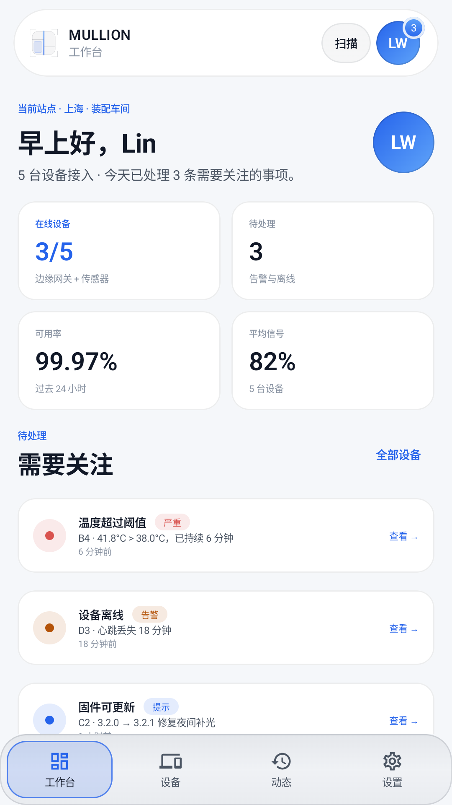
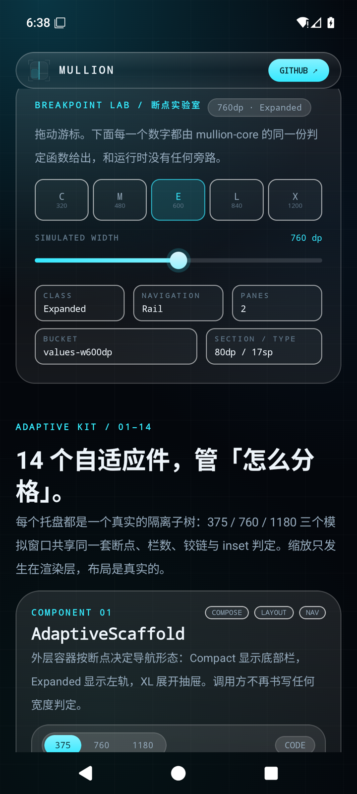
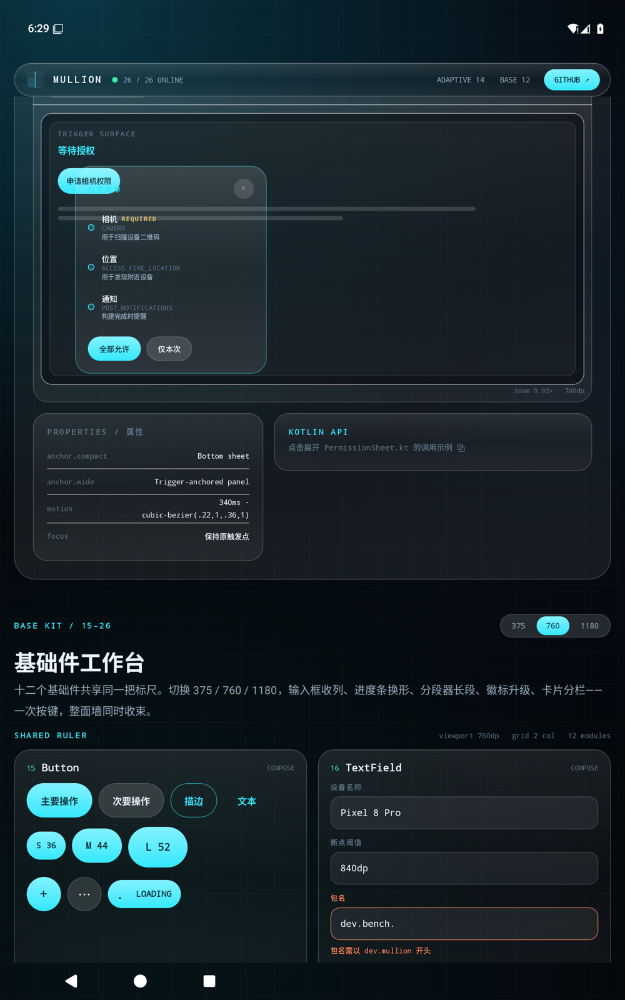
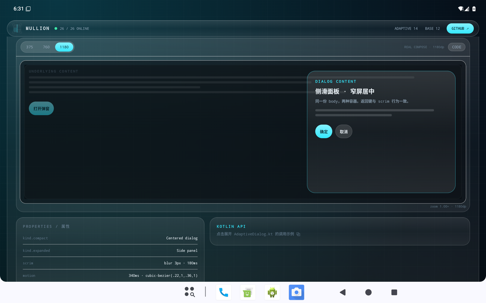

一樘窗如何分格，
由窗棂决定。
Mullion 是把一扇大窗分成若干玻璃格的结构件——它不发光、不抢眼，却决定了窗格如何排布、如何收束、如何避让铰链。组件库之于应用界面，正是这根窗棂：320dp 到 1200dp 之间，一切分格由它定。
android / compose + view / one ruler / zero reflection

别再在每个 Screen 里写 if (width)。
把“什么宽度该长什么样”从业务页面里抽出来，交给一根可测试、可复用、可在 Compose 与 View 之间共享的窗棂。
五个宽度类
Compact / Medium / Expanded / Large / XL。阈值是常量，Resolver 是纯函数，320dp 到 1200dp 一次性覆盖手机、折叠屏、平板与桌面窗口。
导航与栏数一起决定
BottomBar → Rail → Drawer；1 → 2 → 3 栏。所有屏共享同一份 PaneStrategy，切换宽度时业务状态不重建。
铰链是几何，不是装饰
竖缝两侧各留 24dp 安全距离，面板永不跨缝。FoldablePane 在窗格不足时退回单栏，而不是把内容挤碎。
Compose 与 View 同尺
mullion-compose 提供 26 个组件；mullion-view 提供 BreakpointLayout、PaneLayout、GlassView 与 ResourceScaler。断点规则共用 mullion-core。
玻璃是一套可复现的配方
三层渐变、1dp 亮边、主题化 tint；浅色与深色各一套 semantic token。颜色、圆角、时长、命中区域都由 token 定义。
Apache-2.0 · 可发布
三个模块都配置了 MavenPublication 与 sources jar。把它接进现有工程，或从源码开始改。
一根刻度清楚的窗棂。
每一档都同时决定导航、栏数、资源桶与字阶。没有第二套断点表，也没有页面级魔法数。
| Width | Class | Navigation | Panes | Resource bucket | Section / Type |
|---|---|---|---|---|---|
| 320–479 | Compact | BottomBar | 1 | values | 48dp / 32sp |
| 480–599 | Medium | BottomBar | 1 | values | 48dp / 32sp |
| 600–839 | Expanded | Rail | 2 | values-w600dp | 80dp / 44sp |
| 840–1199 | Large | Drawer | 3 | values-w840dp | 120dp / 56sp |
| 1200+ | XL | Drawer | 3 | values-w840dp | 120dp / 56sp |
14 个管分格，12 个管格里。
参考应用先展示真实业务：设备工作台、列表-详情-预览、重启确认与权限流。26 个模块的组件柜保留在设置入口中，每个自适应托盘仍可切换 375 / 760 / 1180 的模拟窗口。
让窗口自己决定结构。
一个 content 调用点，三套导航形态。业务页面里没有 width，没有 breakpoint 数字。
@Composable fun MullionApp() { val bp = currentBreakpoint() AdaptiveScaffold( topBar = { AppBar() }, bottomBar = { OrbitNav(items, selected, { selected = it }) }, rail = { OrbitNav(items, selected, { selected = it }) }, drawer = { OrbitNav(items, selected, { selected = it }) }, ) { _ -> MultiPane( list = { ListPane() }, detail = { DetailPane() }, preview = { PreviewPane() }, ) } // 375 → 1 栏 + BottomBar // 760 → 2 栏 + Rail // 1180 → 3 栏 + Drawer }
不是截图拼贴，是同一套 Compose 代码。
手机、800dp 平板、1280dp 大窗；每个演示格都是真实布局，zoom 只是渲染缩放。


